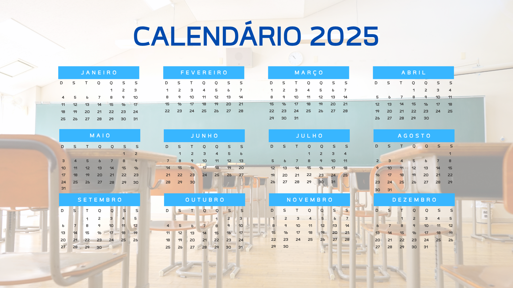

Missão, Visão e Valores
Nossa Trajetória: História da E.E. Florentino Arnaldo Coelho
1965: A Pedra Fundamental
Inaugurada oficialmente como 'Grupo Escolar Municipal', a escola começou sua jornada em um pequeno prédio de arquitetura colonial, com o propósito de alfabetizar os filhos dos trabalhadores rurais da região. A fundação estabeleceu o pilar de compromisso com a comunidade local.

1998: Expansão e Reconhecimento
Após uma grande reforma estrutural que dobrou sua capacidade, a escola foi rebatizada como E.E. Florentino Arnaldo Coelho, homenageando o educador mais influente da cidade. Essa fase marcou a introdução do Ensino Médio completo e a modernização de sua infraestrutura.

2010: Era Digital e o Laboratório
Em um movimento pioneiro, inauguramos nosso moderno Laboratório de Ciências e Tecnologia. Este evento solidificou o compromisso da escola com a Iniciação Científica e preparou nossos alunos para as demandas do mercado de trabalho e do ensino superior.
2024: Prêmio de Destaque Pedagógico
Nosso trabalho foi oficialmente reconhecido com o Prêmio Estadual de Destaque Pedagógico, em função do nosso projeto de Sustentabilidade. Este prêmio reflete a dedicação do nosso corpo docente e a excelência dos nossos alunos em projetos práticos.
Nosso Corpo Docente
Português
Pedro Algusto
Matemática
Ana Costa
História
Carlos Mendes
Geografia
Lúcia Pereira
Sociologia
Marcelo Alves
Filosofia
Renata Gomes
Biologia
Laura Ribeiro
Física
Ricardo Oliveira
Inglês
Sofia Dantas
Inovação, Talentos e Extensão Curricular: Nossos Projetos de Destaque
Feira de Ciências e Tecnologia
Evento anual que transforma a escola em um laboratório de inovação, desafiando os alunos a desenvolverem pesquisas originais e soluções práticas para problemas reais. É o principal palco para aplicar o raciocínio científico e aprimorar a capacidade de apresentação em público, com os melhores projetos avançando para competições estaduais.
Veja MaisClubes de Debates e Oratória
Uma atividade extracurricular intensa e semanal que foca no desenvolvimento da retórica, argumentação e pensamento crítico. Os alunos aprendem a estruturar discursos persuasivos, a analisar diferentes pontos de vista e a dominar a arte do debate, preparando-os de forma robusta para o ENEM e desafios da vida universitária.
Veja MaisJornada Cultural de Artes
Um grande festival semestral que celebra a diversidade cultural e incentiva as expressões artísticas dos alunos. O programa inclui oficinas de Teatro, Música, Artes Visuais e culmina em uma exposição aberta à comunidade, promovendo a sensibilidade estética e o desenvolvimento de talentos criativos.
Veja MaisOlimpíadas do Conhecimento
Nosso programa de aprofundamento é voltado para alunos de alto potencial, preparando-os especificamente para as principais competições nacionais como OBMEP (Matemática), OBF (Física) e outras. O objetivo é elevar o nível de excelência e garantir que nossos alunos alcancem as melhores classificações nessas áreas estratégicas.
Veja MaisCalendário Escolar
Pré-Matrícula e Informações para Ingresso
Seja bem-vindo(a) à Escola Estadual Florentino Arnaldo Coelho! Nossa pré-matrícula é o primeiro passo para garantir uma vaga em nossa instituição. Preencha o formulário abaixo para registrar o interesse do aluno. Após o envio, nossa secretaria entrará em contato em até 48 horas úteis para confirmar as informações, agendar uma entrevista ou visita guiada e detalhar a documentação necessária para a matrícula final.